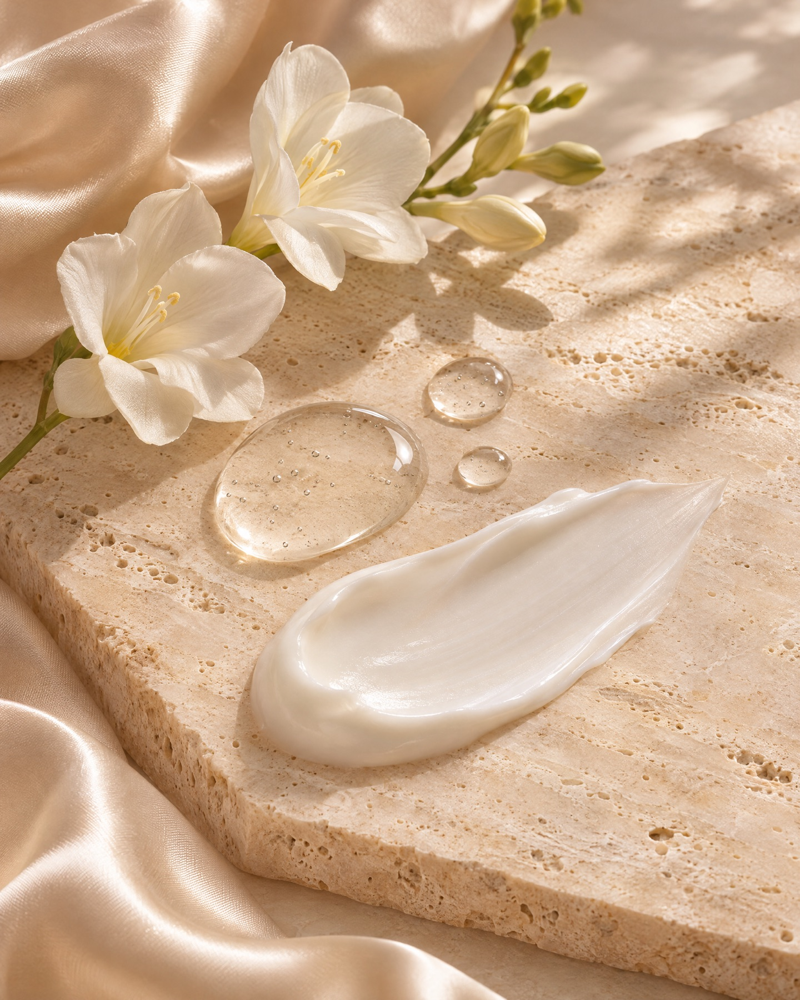
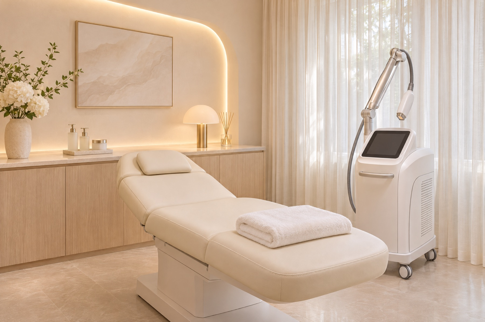
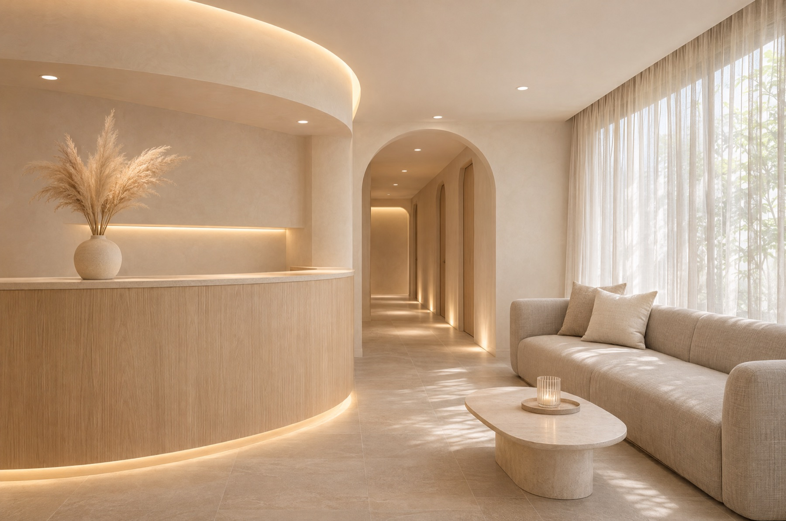

Diagnosis
毎回、医師が肌を診ます
施術の前には毎回、医師が肌の状態を確かめます。前回からの変化を見て、出力や回数を調整します。
表参道の美容皮膚科
シミ・毛穴・ハリの悩みを、医師がひとつずつ診て、
あなたに合う治療だけをご提案します。
※初回カウンセリング・診察料 0円（サンプル）
Concerns
どれが合うか分からなくても大丈夫です。カウンセリングで肌を診てから、一緒に決めましょう。
Our Promise
Diagnosis
施術の前には毎回、医師が肌の状態を確かめます。前回からの変化を見て、出力や回数を調整します。

No pressure
カウンセリングだけでお帰りいただいても大丈夫です。料金は施術の前にすべてお伝えし、あとから増えることはありません。

Private room
カウンセリングから施術、お化粧直しまで個室で過ごせます。ほかの方と顔を合わせることはほとんどありません。
Doctor
皮膚科で長く働くなかで、合わない治療を重ねて肌を疲れさせてしまった方に多く出会いました。AYANOでは、今の肌に本当に必要なことだけを、無理のない回数でご提案します。
院長綾野 しおり（架空の医師です）
Flow
24時間受け付けています。LINEでのご相談もできます。
お悩みを伺い、医師が肌を診て、治療と料金をご説明します。
ご納得いただけた場合のみ、当日または後日に施術します。
施術後の肌の過ごし方をお伝えします。気になることはLINEでいつでも。

Clinic
大きな通りから一本入った、小さなクリニックです。待合はゆったりした席を4つだけ用意しています。
Q&A
はい、大丈夫です。その日に施術や契約をすすめることはありません。
施術によって異なります。ダーマペンなど痛みが出やすい施術では、麻酔クリームを使います。
ピコトーニング・ハイフ・ハイドラフェイシャルは当日から、ダーマペンは翌日からお化粧できます。
現金、各種クレジットカード、交通系ICでお支払いいただけます。医療ローンもご相談ください。